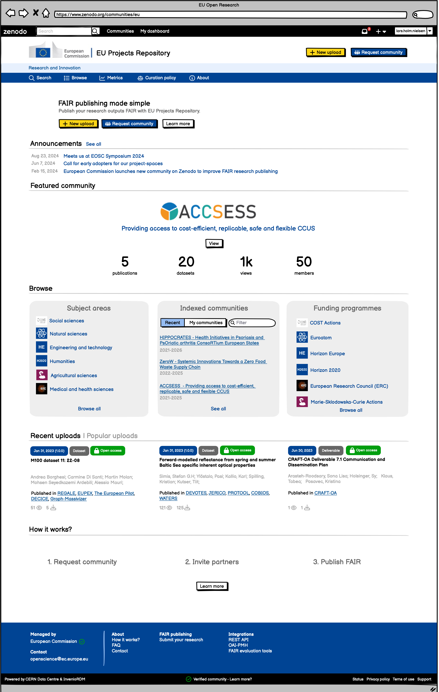

A specific aim of EU’s Open Science policy is to require all publicly funded research data to be FAIR (Findable, Accessible, Interoperable, Reusable) and open by default, and it’s even a contractual requirement for Horizon Europe beneficiaries. Despite large efforts, FAIR in practice is difficult for programme beneficiaries.
EU has over the past 10 years funded Zenodo, an open data repository built by CERN and OpenAIRE, to help beneficiaries comply with first open access, and then open data contractual requirements. This grant capitalizes on past investments made in Zenodo and helps EC programme beneficiaries comply with the new FAIR and open science requirements, by implementing an easy go-to solution in Zenodo for beneficiaries to make data FAIR in practice.
HORIZON-ZEN’s overarching aim is to provide the EC’s programme beneficiaries with enhanced depositing services for digital research objects that are FAIR-enabling and compliant with Horizon Europe requirements, and to establish best practices for how scientific repositories can support the implementation of FAIR data principles by leading by example. This will be achieved by enhancing Zenodo with FAIR-enabling capabilities that support programme beneficiaries during the depositing of research outputs and by leveraging Zenodo’s simple and seamless user experience.
Are you a EU project coordinator? We are looking for EU-funded projects covering a diverse set of domains which are willing to help test and provide feedback. We're extending our communities with features specifically tailored for EU-funded projects.
What's involved?:
Interested?
Contact lars.holm.nielsen@cern.ch

The project will develop an enhanced Zenodo-community for the EC's research programme beneficiaries with support for:
The project will implement:
The project will:
The project will adopt an open community-driven methodology which co-designs objectives 1-3 with early adopters, existing Zenodo/InvenioRDM users/partners and the wider Open Science community.
Follow our project on GitHub